Research Projects
Bilingual Lexicon Induction : Can computers induce translations without parallel texts?
Machine translations are typically learned from parallel corpora that contains sentence-aligned bilingual texts. However, for many language pairs, such parallel corpora cannot be assumed. In such cases, being able to learn translations from monolingual sources is potentially useful. I model the problem of learning lexical translations as a matrix completion problem, and present an effective and extendable framework for completing the matrix. The method harnesses diverse bilingual and monolingual signals, each of which maybe incomplete or noisy. The model achieves state-of-the-art performance for both high and low resource languages [ACL2018][EMNLP2017] [project page].
{kind=link}
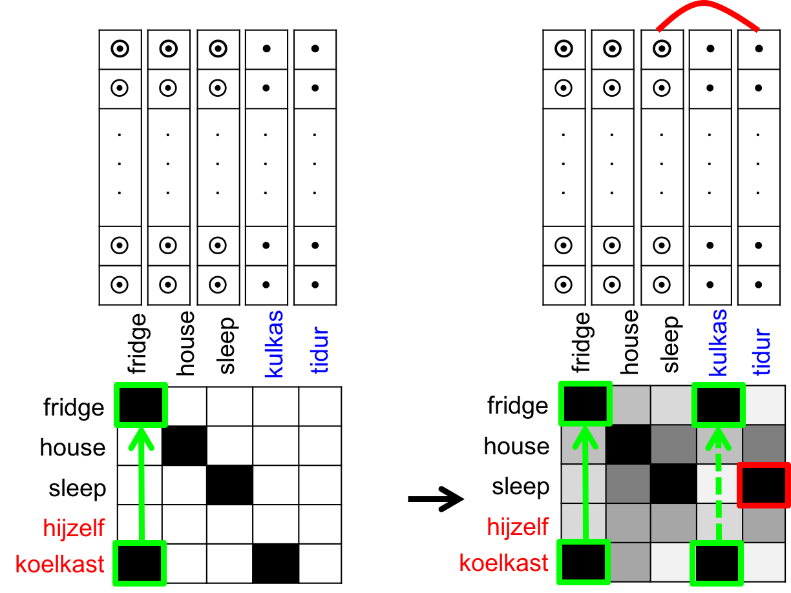
{kind=link}
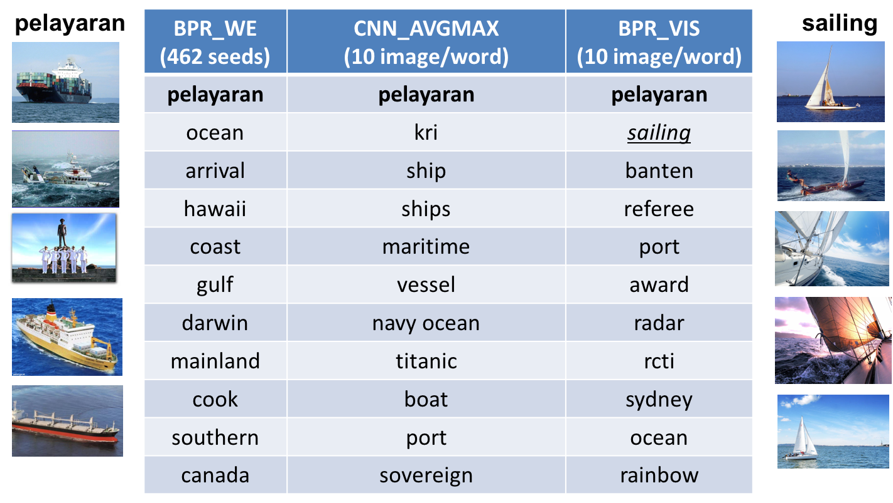
Figure 1: (Left) The model allows us to use a diverse range of signals to learn translations, including incomplete bilingual dictionaries, information from related languages (like Indonesian loan words from Dutch shown here), information from multilingual knowledge bases such as DBPedia, word embeddings (shown in the columns), and even visual similarity cues. (Right) The model that combines textual and visual signals for translations (BPR_VIS) improves accuracy of the translation compared to the method that uses textual (BPR_WE) or visual (CNN_AVGMAX) signals alone. In this example, the correct English translation for the Indonesian word "pelayaran" is underlined. The figures on the left and right show the Google Search images of the word in Indonesian and in English.
Verb Knowledge Base : Can computers learn the meaning of verbs?
A verb is the organizational core of a sentence. Understanding the meaning of the verb is key to understanding the meaning of the sentence. One of the ways we can formulate natural language understanding is by treating it as a task of mapping natural language text to its meaning representation: entities and relations anchored to the world. Since verbs express relations over their arguments and adjuncts, a lexical resource about verbs can facilitate natural language understanding by mapping verbs to relations over world entities that are expressed by the verbs' arguments and adjuncts.
Part 1 : Which verbs express which relations?
I developed a semi supervised method that automatically creates a multilingual resource on verbs that links verbs to relations over entities in NELL knowledge base. Additionally, the method incorporates constraints among relations in NELL's ontology to effectively map the verbs to the relations. [NAACL2016][AAAI2015][project page].
{kind=link}
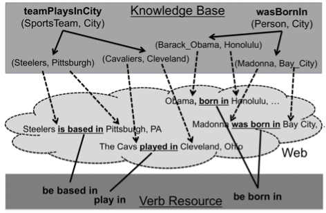
{kind=link}
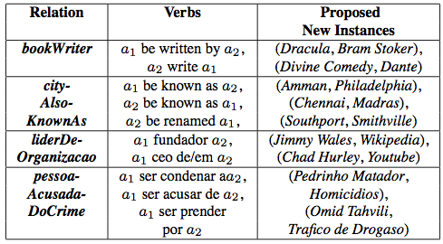
Figure 1: (Left) Mapping verb phrases to relations in NELL knowledge base through web-scale text. Each relation instance is grounded by its mentions in the Web-text. The verbs that co-occur with mentions of the relation’s instances are mapped to that relation. (Right) The table shows English and Portuguese verbs and proposed new instances for some NELL relations.
Part 2 : Which verbs express which change in relations?
I developed a method that uses Wikipedia edit history as distant supervision to automatically learn verbs and state changes e.g., to learn that the addition of the
verb "marry", which takes a person as a subject, to the person's Wikipedia page indicates (to a certain degree of confidence) the beginning of the person's spousal
relationship, while the addition of "divorce" indicates the termination of said relationship. Additionally, the method uses constraints among the relations to effectively map verbs to relation changes.[EMNLP2015][EMNLP2014][AKBC2014][project page]
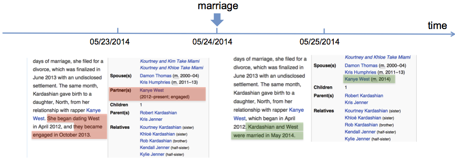
{kind=link}
Figure 2: A snapshot of a person's Wikipedia edit history, highlighting text and infobox changes. Highlighted in red (and green) are edit history of the page: things that are deleted from (and added to) the page, after the person's marriage event. The edit history acts as a distant supervision for learning the correspondence between verbs being added/deleted from the page and relations being updated in the infobox.
{kind=link}
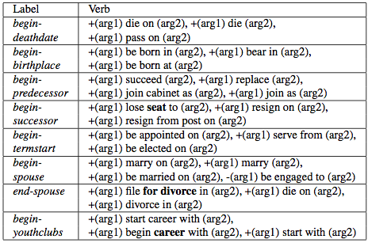
Figure 3: The table shows some of the learned state-change verbs for various initiation (begin-) and termination (end-) of relations.
Part 3 : Can verbs extend knowledge bases?
In my dissertation, I developed a method to semi automatically build VerbKB, the largest knowledge base of English verbs to date. VerbKB contains verbs that are extracted from web-scale texts, semantically typed, organized into synonym sets, and mapped to relations in NELL knowledge base. VerbKB extends NELL’s ontology of relations with clusters of semantically similar verbs. [Dissertation][project page]
{kind=link}
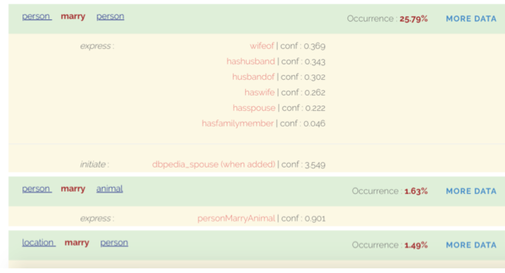
Figure 4: VerbKB entry for the verb "marry" showing the mapping of the verb to the relations in NELL that it expresses. It also shows the mapping from the verb to the initiation of the spouse relation in Wikipedia. The verbs' arguments are semantically typed with NELL categories, and the typed verbs are ranked based on their frequencies of occurrences in the Web-text.
The distribution of verbs associated with any given relation in a knowledge base forms a representation of that relation’s semantics that is independent of the knowledge base. To integrate beliefs in these knowledge bases and extend the coverage of any one knowledge base, I developed a graph-based self-supervised learning called PIDGIN for aligning their knowledge through verbs in Web-text. [CIKM2013] [project page]
{kind=link}
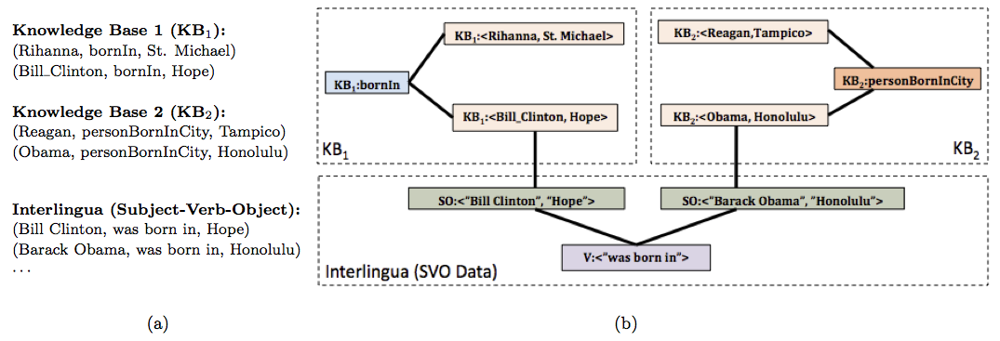
Figure 5: (a) Inputs to PIDGIN include KB1 and KB2, each consisting of two relation instances (e.g., (Bill Clinton, bornIn, Hope)). Another input is a set of Subject-Verb-Object (SVO) triples (the interlingua) extracted from a natural language text corpus. (b) Graph constructed from the input. PIDGIN performs inference over this graph to determine that KB1:bornIn is equivalent to KB2:personBornInCity. Since there is no overlap between relation instances from these two KBs, algorithms based on instance overlap will be unable to align these two ontologies. PIDGIN overcomes this limitation through use of the SVO-based interlingua and inference over the graph.
Temporal Scopes in Knowledge Bases : Can computers learn temporal validity of beliefs in knowledge bases?
Much of the effort on constructing knowledge bases has been focused on gathering beliefs without their temporal scopes when in reality beliefs dynamically change with time e.g., politicianHoldsOffice(Reagan, president) is only valid from 01/20/1981 to 01/20/1989. In my research, I have observed that mentions of entities and beliefs in texts change over time. These changes can be used to infer their updates in the knowledge base.
Part 1 : When does a belief start and when does it end?
With collaborators, I developed a joint inference method for extracting the temporal scopes of a belief from changes in the counts of a belief's mentions in documents. Independent activation scores of beliefs, which are inferred from their mentions, are input to a joint inference framework to infer the temporal scopes of beliefs while respecting temporal constraints among those beliefs e.g., the constraint that politicianHoldsOffice(Bush, president) succeeds politicianHoldsOffice(Reagan, president). [WSDM2012]
{kind=link}
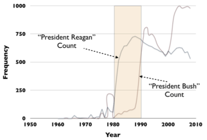
Figure 1: Temporal profiles of two beliefs in NELL knowledge base demonstrating potential benefit of collective inference: considering ’President Bush’ during inference can help determine the end of Reagan’s presidency (shaded region).
{kind=link}
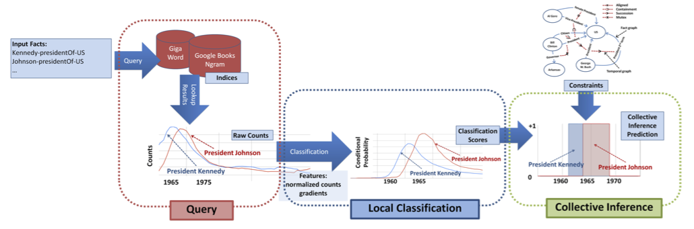
Figure 2: Architecture of the joint inference framework. We query time-stamped text corpora for beliefs in knowledge bases to obtain their temporal profiles. The temporal profiles are input to a classifier that classifies for each belief whether the belief is active or not at any given time. Independent activation scores of beliefs are then input to a joint inference framework that infers the temporal scopes of the beliefs consistent with their temporal constraints.
Part 2 : Do some beliefs typically start before another?
To learn the temporal constraints among beliefs, with collaborators I developed a method that automatically learns the temporal constraints among relations (e.g., to learn that the relation starredIn(actor, movie) typically occurs before wonPrize(movie, award)), from the narrative order of the verbs that express the relations within documents. The narrative order of the verbs serve as a probabilistic training signal for learning the temporal order of the relations that the verbs express. Instead of ordering two beliefs at a time, we developed a graph-based label propagation algorithm called GraphOrder to jointly infer the temporal order of all relations at once, taking transitivity into account. [CIKM2012]
{kind=link}
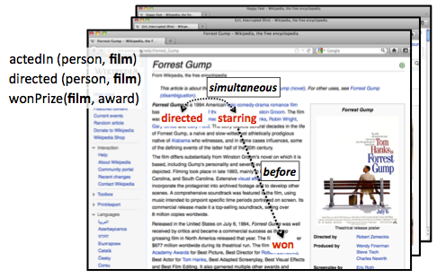
{kind=link}
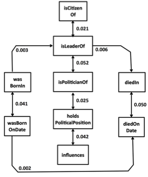
Figure 3: (Left) Given a large document collection, we aggregate the narrative order of the verb mentions in the documents (e.g., "directed", "starring", "won", etc.) and use it to serve as a probabilistic training signal for learning the temporal order of the relations that the verbs express (e.g., directed, actedIn, wonPrize respectively). (Right) Examples of temporal orderings of relations in the domain of Politics which were automatically learned by GraphOrder. Directed arrow indicates a before relation while each bi-directed arrow indicates a simultaneous relation. The score on each edge indicates the confidence of the temporal order.
Understanding Semantic Change of Words Over Centuries : Can computers detect when and how some words change meanings?
Words change meanings over time and these changes are often reflected in the context in which the words are being used at different times. For example, the word "awful" originally meant ‘awe-inspiring, filling someone with deep awe’, as in the "awful majesty of the Creator". At some point it becomes something extremely bad, as in "an awfully bad performance", but now the intensity of the expression has lessened and the word is now used informally to just mean ‘very bad’, as in "an awful mess".
I developed a method to model and analyze changes that occur to a word in terms of the changes in the words that co-occur with it (i.e., its context) over time in Google Books NGram. Specifically, for a given word of interest, the method clusters words that occur in its context. Each cluster is a reflection of the word's meaning and the method identifies the year(s) in which the cluster changes. The change in the cluster acts as a proxy for the change in the word's meaning. [DETECT2011]
{kind=link}
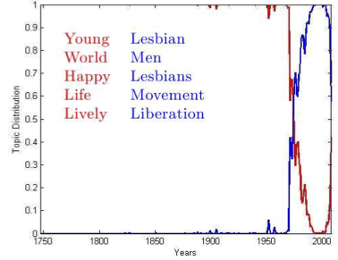
Figure 1: Given the word "gay", the cluster change can be seen around 1970s when the word "gay" started to be used with words that reflect the homosexual meaning of the word "gay". The top words for each cluster are a good indicator of the original and the latter meaning of the word.
{kind=link}
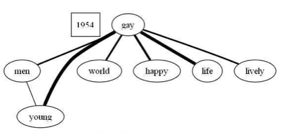
{kind=link}
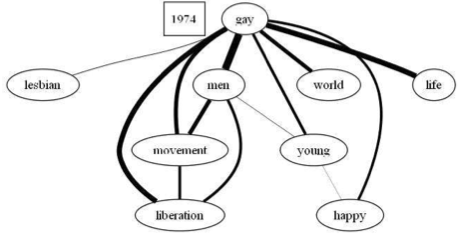
{kind=link}
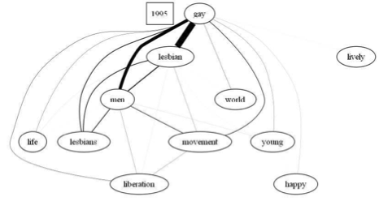
Figure 2: Word co-occurrence graphs of "gay" at different time periods. Each word is a node and the edge between nodes is weighted by the number of n-grams in which these words co-occur together in Google Books NGram. In 1954, the node "gay" is mostly connected with the nodes "young", "life" etc. but as the time goes on nodes such as "liberation", "lesbian" get connected to "gay" and their weights increases over time. With these graphs we can easily see how the word usage changes over the years.
Other previous research projects
-
Understanding Semantic Relationship between Nouns in Noun Compounds through Paraphrasing and Ranking the Paraphrases. Machine Learning course, 2010
Given an noun compound (NC) such as 'headache pills' and possible paraphrases such as: 'pills that induce headache' or 'pills that relieve headache' can we learn to choose which verb: 'induce' or 'relieve' that best describes the semantic relation encoded in 'headache pills'? In this project, we describe our approaches to rank human-proposed paraphrasing verbs of NCs. Our contribution is a novel approach that uses two-step process of clustering similar NCs and then labeling the best paraphrasing verb as the most prototypical verb in the cluster. At that time, our proposed method outperforms state-of-the-art method for the task. [SMER2011] -
Meta learning based on Data Mining ontology. Project done as a
graduate research assistant for the e-LICO project at the University of Geneva, Switzerland, 2009-2010
The project aims to put some sort of structure into the abundant disarray of algorithms in the field of Data Mining through the construction of Data Mining ontology. With this ontology, it is hoped that some structured insights can be made into the 'black boxes' of algorithms, find algorithms' inherent similarities and differences, and their suitability for a particular task or datasets with specific characteristics. The ontology will be used as a source of prior knowledge in an intelligent meta-learner that will help users of Data Mining algorithms to select the best algorithm and the sequence of Data Mining operators most suitable for the task and the dataset at hand. - Mining Correlation among Time Series using Maximum Fuzzy Alignment. Advanced Data Mining course, 2007
This project proposes to measure correlation between time series that allows for time shifting and mismatching. The project uses idea from Machine Translation in Natural Language Processing to find maximum fuzzy alignment between time series. Initial experiment on synthetic and real data shows that the method is able to find better alignment than the Longest Common Subsequence algorithm - Rating Objects using Random Walk on Sentiment Graph. Advanced Natural Language Processing course, 2007
This project constructs sentiment graph from reviews, with adjectives from reviews as nodes in the graph. It then conducts random walk on the graph to simulate the flow of sentiments among adjectives and score the adjectives. Objects are then ranked according to the aggregated sentiment scores of their adjectives [CIKM2008] - Text Summarization. Text Processing on the Web course, 2007
This project uses Markov clustering to first cluster sentences according to topics and then uses PageRank algorithm to select the most important sentence of each cluster to be returned in the summary - Ranking resources and queries in mobile discovery of resources in peer-to-peer wireless network. Parallel and Distributed Databases course, 2006
This project explores the management of databases distributed among moving objects such as mobile devices in a peer-to-peer wireless ad-hoc network. We investigate the effect of ranking resources and queries that are to be shared among mobile devices in a peer-to-peer wireless ad-hoc network with a limited communication bandwidth. We perform simulation on SWAN which is a scalable wireless ad-hoc network simulator to test and compare the effect of various ranking schemes.